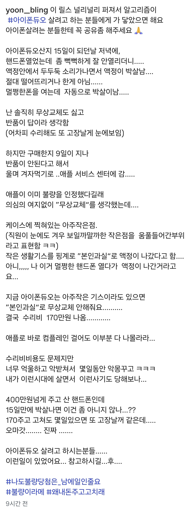

https://www.instagram.com/reel/Df8rrTKBtTd/?lqvp=MWcyNGo5c3kybWhsbQ==

https://www.instagram.com/reel/Df8rrTKBtTd/?lqvp=MWcyNGo5c3kybWhsbQ==
https://www.instagram.com/reel/Df8rrTKBtTd/?lqvp=MWcyNGo5c3kybWhsbQ==

https://www.instagram.com/reel/Df8rrTKBtTd/?lqvp=MWcyNGo5c3kybWhsbQ==
왜 이제와서 수리비로 징징거림? ㅋㅋㅋ모르고 샀나? ㅋㅋㅋ
모르고 샀지 알고 샀겠냐? 누가 개붕이 아니랄까봐 별걸 다 비아냥거리네
사용자들이 돈 많이주고 사고 수리에서도 손해보고 이러니
회사 이익은 당연히 좋지
울 동네치킨도 양심적인 사장님은 원가 커버못해서 망함
배짱장사해야 돈을 버는거야
나도 예전에 삼as 갔다가 비슷한 상황이여서 무상as 거부 당한적 있었는데 이후로는 플립 절대 안씀. 액정 필름 교체 할려고 떼는데 스무스하게 떼지는중인데 액정이 검게 변하더라 ㅅㅂ
그거 개인이 교체하다가 망가지면 as안되서 서비스센터가야됨
병신인가 제품에 보호필름 떼지말라고 떡하니 써있는거 지가 무시하고 떼놓고 징징이네 ㅋㅋㅋ
플립1때 이야기인데 떼지 말라고 공식 내용이 있었음? 진짜로??? 처음 듣는 이야기인데?
아? 플립1이면 애매한데? 내가 폴드2,3,5,6,7 쓰는데 쓸때마다
맨처음 검정색 보호필름 없앨때랑 처음 세팅할때.. 이렇게 경고문 보여줌
내부는 개인이 때지말라고 그렇게 적어두고 하는데 그걸 굳이 때는구나...
떼지 말라고 어디에 적어 놨었는데? 플립1때 사용자라 자세한 기억은 안나는데 그런 문구는 본적이 없는걸

https://mblogthumb-phinf.pstatic.net/MjAyNTAyMDdfMTQ3/MDAxNzM4OTM4OTU3NjI5.xtM4kxhqRTNPgHZvC9AdsBBebz7b614bAXutp6H8L4kg.vllokR7ZcmIa_BUccwXHILfFAkC5558U26Mx5MujQ3og.JPEG/image.JPEG?type=w966
내부 필름은 제거하지 말라 써있음
이야....대단하다
이야...이렇게해야 아이폰 쓰는구나
쉬발 그냥 아이폰쓰는 나는 뭔 잘못이냐,,,
다 알고사는거잖아
파손부위가 중앙인데 사이드에 충격가서 고객과실인게 말이 되나?
어메이징한 경험을 하고 싶으세요?
존나게 징징대네 하나 더 사면 될걸
무조건 수리할거면 애플스토어 가야됨. 공인 수리점은 개깐깐하게 보는 게 메뉴얼인듯
..ㅋㅋ 이번 사태로 주변에 진성 앱등이 두명 폴드8로 갈아타는거보고 진짜 듀오가 개심각하구나 생각했다
그게 감성아니야?
근데 400넘게주고샀는데 애케플을안들었음? 능지뭐임???
비통했어요
어차피 애플 못잃어 할거자너 ㅋㅋ
팩트) 쟤도 저래놓고 계속 애플씀
그 수리비로 폴드8을 사겠다 그냥
그 사태를 몰랐을리가 없는데
구매취소 안한 본인 잘못이지 뭐 ㅋㅋㅋㅋ
휴대폰을 저렇게 비싼거 쓸 이유가 따로 있긴함?
니가 선택한 애플이다
아이폰 구매자라면 피해자라 해도 깔쌈하게 야리돌림 하는 킹갓 현명한 소비자이자 냉철한 분석가들~ 아무렴 팀쿡이 빌딩에서 다이빙 게이 키스를 해도 앱등이 탓이죠
1세대 샀으면 감당해라 쳐징징대지말고 ㅋㅋ
비싼 제품은 비싼 수리비를 부르는 거라 생각하고 버텨
돈없으면 그냥 써야지 뭐 으쯔르긔~ ㅋㅋㅋ
억울한거 알겠고 애플이 씹새끼들인거 알겠는데..
출시 당일부터 이슈가 크게 난 걸 몰랐을리 없을텐데도 그냥 썼으면 본인 잘못도 반은 된다고 생각함
솔직히 '나만 아니면 돼!' 하다가 자기가 걸리니까 우는 소리 하는거 아님??
통쾌했어요
그게 억울해서 악몽꿀 정도 재력이면 폰에 400을 처박질 말아야지 소비를 뭐같이 하나보네
하나 더사 그럼ㅋ
알고산거아님? 애플 듀오, 비와디 산사람들은 그냥 올게왔구나하고 쓰면되는거아님?
그래도 무상교체 해주네 비교되네 하던 병신 앱등이들